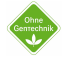
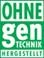

Certifikácia poľnohospodárov, producentov a spracovateľov potravín, výrobcov a dodávateľov krmív s cieľom získať štatút „bez GMO“
Certifikácia poľnohospodárov, výrobcov a dodávateľov krmív, producentov a spracovateľov potravín s cieľom získať štatút produktu „bez GMO“ a aj možnosti získania značky „bez GMO“ sú zaujímavé pre tých, ktorí dodávajú mlieko do mliekarní v Rakúsku, Nemecku resp. aj na Slovensku.
Téma „GMO potraviny“ sa dostala do médií a do povedomia spotrebiteľov zároveň s prvou dodávkou GMO sóje z USA do EÚ v roku 1996. V súčasnosti v Nemecku existujú preukázateľné prieskumy verejnej mienky, kde takmer 80% obyvateľstva odmieta potraviny, ktoré obsahujú GMO. V regáloch supermarketov v Rakúsku a Nemecku je stále menej a menej potravín vyrobených v prostredí GMO. Spotrebitelia nemajú o ne záujem. Veľké obchodné reťazce hľadajú potraviny, ktoré neobsahujú GMO, resp. sú vyprodukované v prostredí, kde neboli použité GMO. V súčasnosti existujú okrem legislatívy EÚ aj štandardy, podľa ktorých je možné certifikovať poľnohospodárov, producentov a spracovateľov potravín, výrobcov a dodávateľov krmív s cieľom získať štatút „bez GMO“. Štatút potvrdzuje logo alebo značka používaná na základe licencie. Napr. v Nemecku je zaužívaná značka „Ohne Gentechnik“,

v Rakúsku „Ohne Gentechnik hergestellt“.

O výrobky označené takýmto logom je zo strany spotrebiteľov a tým aj obchodných reťazcov stále väčší záujem. Požiadavka na dodávky produktu bez GMO sa čoraz častejšie objavuje vtedy, ak sa surovina (napr. mlieko) alebo produkt (napr. jogurt, maslo, syry a pod.) exportuje na nemecký alebo rakúsky trh.
Na Slovensku uskutočňuje certifikáciu producentov, spracovateľov potravín a krmív, spoločnosť ZAS s.r.o. sídliacej v Nitre – Lužiankach na Hlohoveckej 2.